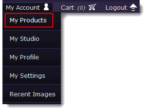
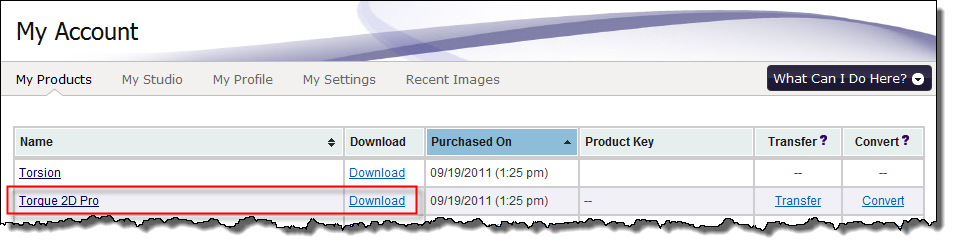
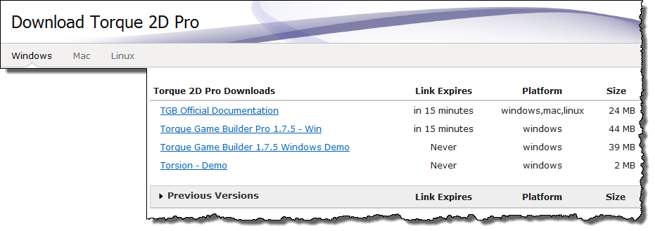
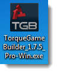
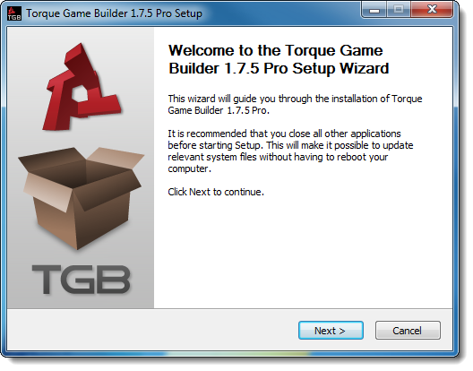
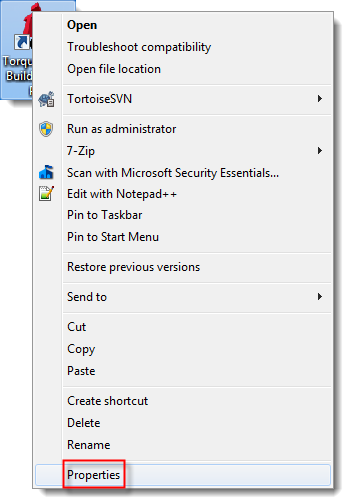
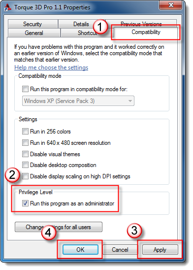

Overview
Setting up Torque 2D is a simple process. When you license Torque
2D, you get access to all the editors, scripting and full engine source
code. This gives you the power to make changes to the engine's
functionality, should you choose to. Studying the source-code is also a
great way to learn about advanced game engine programming. Even if you
download the source code now, you need to prepare your system before you
work with Torque 2D.
Installing Torque 2D
After you have purchased a license, you are free to download and
install Torque 2D. There are many components that ship with the engine,
but first let's obtain the installer. Log into GarageGames.com, then
click on the My Account->My Products link:

You will be presented with a page showing all the products you own.
Locate Torque 2D in this list, then click on the download link. Do not
click on the name of the engine, as this will take you to the product
page:

You will be taken to the product download. From here, you can download
the latest version of the engine. You can also download previous
versions or the documentation by itself. Make sure you are on the proper
tab for the platform you wish to download, then click on the version
you wish to download (version may differ from the following image):

The actual installer for Torque 2D is small. It should not take
long to download. Download process will vary between browsers.
After the download has finished, locate the installer.
On Windows
It will be a .exe and you will have been prompted to select a
location when you started the download so navigate to that location and
double click the installer icon.
On OSX
It will be a .dmg file, the default is usually to download to
your desktop, and depending on your version of Safari it may open
automatically when the download is complete. If it does not, then locate
and double click the installer icon.
Note: The icon for the installer is the same regardless of the platform:

Once the installer opens you will then be walked through the installation process.

NOTE: If you have Windows permissions enabled and UAC running, you might run into problems trying to create and open projects from the editor. You will receive an error messages stating "Unable to open project".
UAC is preventing Torque 2D from saving out the necessary files required to create and open projects. To resolve this issue, you must go through the following steps on Windows 7 or Windows Vista:
1. Right click your Torque 2D shortcut or executable file and select "Properties".

2. Click the "Compatibility" tab.
3. Make sure the box for "Run this program as an adminstrator" located under "Privilege Level" is checked.
4. Click "Apply" and "OK" to close the dialog box.

Torque 2D will now always run as an adminstrator and the program will have the access it needs to save and open
project files.
Optional Downloads
Depending on your operating system, there are other tools you can
obtain to speed up development. For example, on Windows you might
consider Torsion
from the GarageGames.com store. If you are looking at serious
development, you might consider setting up source control such as
Subversion or Git.
Conclusion
With Torque 2D installed you are ready to start making games. It is highly
recommended you keep reading through the documentation for tips on how
to get started and learn the work flow of the tools. |